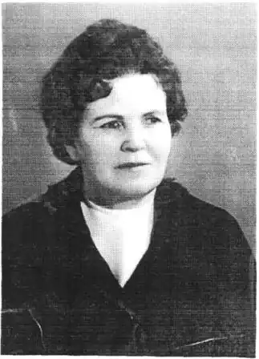

Марія Авакумівна Познанська — українська дитяча поетеса, на добрих і цікавих книжках якої виросло не одне покоління.
Народилася вона 15 липня 1917 року у с.Петрашівка (нині с.Гайворон Володарського району Київської області). Змалку була зачарована природою свого краю. Завдяки поезії Т.Г.Шевченка зрозуміла й полюбила музику віршованого слова, його силу. Ще дівчинкою, читаючи рядки "Кобзаря": "Хлюпочуться качаточка по-під осокою" або "А над самою водою верба похилилась", Марійка пригадувала, що всі ці картини бачила у своєму рідному селі. В кінці городу в них ріс великий столітній дуб, куди вона прибігала, сподіваючись побачити нещасну закохану дівчину з "Причинни", а ще поплакати над долею Катерини. Вже тоді дівчинка почала складати пісні, сама добирала до них мелодії, наспівувала їх подругам, але про те, хто є автором, нікому не казала.
Після закінчення семирічної шкоди Марійка працювала в колгоспі, де вирощувала цукрові буряки. Там майбутня поетеса навчилася розуміти й відчувати землю в усій її розмаїтості й багатстві, про що згодом засвідчила її поема "У колгоспі "Перемога". Проте для оволодіння секретами творчого процесу потрібні були знання. Вечорами вона поринала у читання, а вранці бігла у поле. У 1937 р. Марія Познанська успішно склала вступні іспити до Білоцерківського педагогічного училища. Викладач дитячої літератури Н.Харченко порадила їй пробувати сили у дитячій літературі. Тоді й з'явились перші Марійчині вірші для дітей у білоцерківській газеті, але навчання і творчість обірвала війна. Чотири воєнних роки Марія Познанська працювала рахівником у радгоспі "Комсомолець" Воронезької області, а після війни стала студенткою мовно-літературного факультету Київського педагогічного інституту. По його закінченні (1949) була активною учасницею літературної студії при редакції журналу "Дніпро", продовжувала писати й друкувати вірші для дітей. Разом із кількома поетами — початківцями Марія Познанська звітувала про свою творчість у Спілці письменників України. Вірші її одразу помітив П.Г.Тичина, який головував на вечері. Відзначивши їхню свіжість, лаконізм, образність, він попросив, щоб Марія дала йому прочитати інші свої вірші. Взявши тоненький зошит, свою майбутню першу збірку, вона віднесла її Павлові Григоровичу. В 1946 р. вийшла перша книжка "Мій квітник". У поезіях, які складають цю збірку, яскраво виявилась характерна риса творчості поетеси: бути не споглядачем, а діячем. Вона зрозуміла, що основою життя дитини є гра, яка веде до пізнання реального світу. Саме тому поезії Марії Познанської сповнені життя, багато з них є. своєрідним монологом дитини. 3бірку помітили не тільки читачі, а й письменники, зокрема С.Я.Маршак та К.І.Чуковський, який на сторінках "Литературной газети" виступив із розгорнутою рецензією. Він, зокрема, відзначив, що у Познанської — зрілий, впевнений смак і такий ступінь майстерності, який приходить лише з досвідом. Поетеса долала сходинку за сходинкою. Виходила на нові тематичні простори, збагачувала мистецькі засоби виразності. Вона націлювала себе на великі, соціально вагомі твори — поему, віршовану повість. У наступні роки з'являються нові збірки віршів М.Познанської: "Буду піонером" (1948), "Де сонце і квіти", "На рідній землі", "У колгоспі "Перемога" (1950), "Тьотя Паша" (1951), "Маленьким друзям" (1953), "Асканія-Нова", "Валя Котик", "Кольори" (1954), "Про чудо-ліс, що на полі зріс" (1956), "Дуровська залізниця", "У нашому садочку" (1958), "Про білий халат і наших малят" (1959), "Ми зростаєм, наче квіти" (1960), "Що я знаю про метро" (1961), "В нас поки ще земні турботи" (1963), "Любій малечі про цікаві речі" (1964), "Дім на горбочку" (1965), "Про золоті ручки" (1966), "Щоб ти був щасливий" (1967), "На тій землі, де ти ростеш" (1968), "Жоржини цвітуть", "Зелена повінь" (1969), "Сонячна сопілка" (1970), "Чим пахне коровай" (1975), "Фортеця над Дніпром", "Щоб ти був щасливий" (Вибрані твори, 1977), "У садочку колосочку" (1980), "Всьому свій час" (1983), "Жоржини цвітуть" (Вибрані твори, 1987) та багато ін. Навіть назви цих книжок свідчать, що поетеса вміла помічати нове у житті й розповідати про нього дітям. Марія Познанська ніколи не відступала від свого принципу: для малечі слід писати відверто, серйозно й дохідливо. Саме так створено поему "У колгоспі "Перемога". Малий хлопчик знайомить читачів зі своїм колгоспом та з односельцями. В його розповіді відчувається гордість за рідне село. Перед маленькими читачами вимальовується розлоге поле праці. На всесоюзному конкурсі на кращу книгу для дітей у 1950 р. ця поема була відзначена першою премією. Розповідь маленького Петра, сина метробудівця, — серйозна й дотепна ("Що я знаю про метро"). Він розповідає про те, що бачив під землею, про гарні, залиті світлом, її палаці і, звичайно, про стрічку-ескалатор, на якій так полюбляють кататися діти. І найперше — про незвичайні професії: прохідника і бетоняра, монтажника і каменяра, про нові машини на будівництві київського метро. Багатством художніх знахідок глибоким знанням природи і тваринного світу вражає книжка "Асканія-Нова". Надзвичайно цікавою була подорож дітей до цього незвичайного заповідника, де живуть рідкісні звірі й птахи. Марія Познанська створила художні цінності, що збагачують духовний світ дітей, збуджують у них глибокі патріотичні почуття. Писати для дітей не так вже й легко, а для малят — ще важче. Проте саме вони надихали М.Познанську на нові творчі задуми й викликали почуття відповідальності за кожне своє слово. Поетеса часто зустрічалась зі своїми читачами у дитячих садках, школах, будинках піонерів, бібліотеках . З 1947 р. Марія Познанська член Спілки письменників. У свою творчість Марія Познанська сміливо вводить документалистику, реальні історичні події й персонажі. Читачі з задоволенням читали героїчну поему "Валя Котик", у якій пристрасно, з материнською ніжністю автор розповідає про життя і героїчну загибель чотирнадцятирічного партизана, шепетівського школяра. На написання цієї поеми Марію Авакумівну надихнула зустріч з матір'ю героя, з його друзями, які показали їй місця подій. Вона побувала на станції Майдан-Вила, де хлопець, переодягнений у пастушка, пустив під укіс ворожий ешелон із боєприпасами. Поетеса зуміла глибоко осмислити документальний матеріал, майже ніде не відступила вона від тих відомостей, що дійшли до нас про мужнього хлопчика, не вдавалася до вигадування якихось нових ситуацій, а просто вплела у поетичну тканину власний вражаючий ліризм. Після виходу поеми Валі Котику посмертно було присвоєно звання Героя Радянського Союзу. На документальному матеріалі побудовано і поему "Жоржини цвітуть", присвячену піонерові-герою, колишньому учневі 110-ї середньої школи м. Києва Казимирові Гапоненку — безстрашному зв'язковому київського підпілля, яким керував Іван Кудря. У кошику із овочами хлопець переносив партизанам гранати. Фашисти закатували Казика, коли йому було всього одинадцять років. Твори М.Познанської збуджують в юних серцях потяг до художнього слова, вчать дітей по-новому бачити й сприймати явища навколишнього світу, роблять їх щирішими, більш чутливими до краси. 1977 року побачила світ книжка вибраних творів поетеси "Щоб ти був щасливий", до якої увійшло все краще із створеного нею упродовж тридцяти років письменницької діяльності. Книга засвідчує високу художню майстерність авторки, її вміння повести юних читачів дорогами боротьби, пошуку, утвердження добра. За віршовану розповідь "Фортеця над Дніпром" та книжку "Щоб ти був щасливий" М.Познанська удостоєна премії їм. Лесі Українки (1978), яка присуджується за кращі твори для дітей. Не одне покоління дітей захоплювалось й продовжує захоплюватися нині творчістю поетеси, відкриваючи для себе з її книжок багато цікавого й корисного. Твори М.Познанської відзначаються актуальністю звучання, прагненням, не спрощуючи, з максимальною дохідливістю й щирістю повідати "малим про велике", відгукнутися на важливі події в країні та світі. Письменниця ніколи не лишала поза увагою "малих форм". Чимале місце в її творчості посідає пейзажна лірика. Вірші ці ніжні, образні, пройняті чарівною безпосередністю і щирими почуттями. Дітям до вподоби, зокрема, такі зворушливі вірші, як "Хмарка", "Всьому свій час". "Садівник", "Хлібороби". Чимало творів М. А.Познанської вміщено до читанок, хрестоматій дитячої літератури, їх читають малюкам у дитсадках. Твори відомої української поетеси перекладені багатьма мовами світу. Вони позначені глибоким знанням автором дитячої психології, емоційністю й теплотою. Не старіють вірші, бо сповнені вони невичерпної любові до дітей. Українська поетеса померла 18 травня 1995 року.